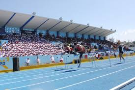

Situación Problemática
En el Colegio Politécnico Regional del Centro – Huancayo, los estudiantes de tercero de secundaria están participando en un proyecto para construir una pista de atletismo alrededor del campo principal del colegio. El área total destinada a la pista está representada por el polinomio , mientras que la longitud de uno de los tramos rectos del circuito se expresa como . Los alumnos deben determinar la expresión que representa el ancho de la pista, aplicando el método de división de polinomios.
